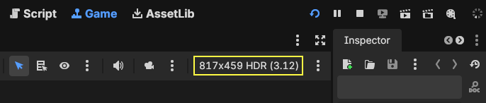
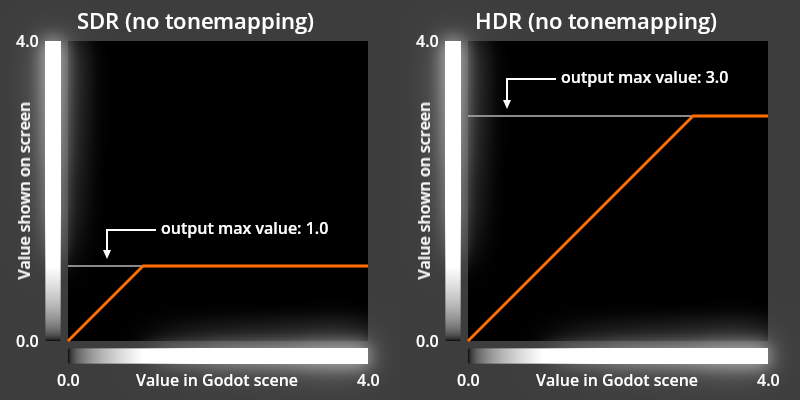
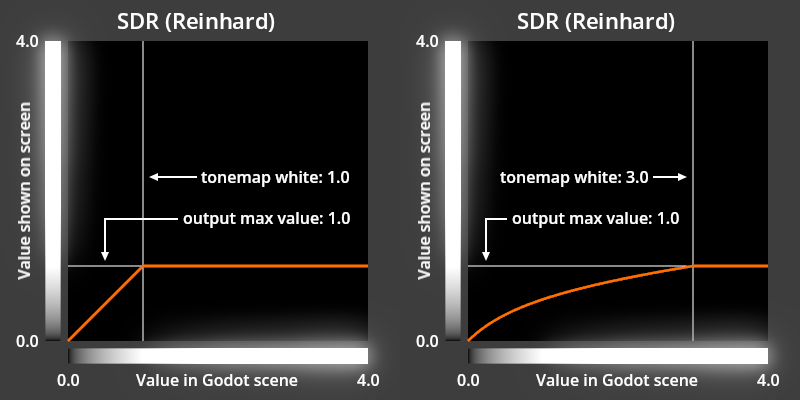
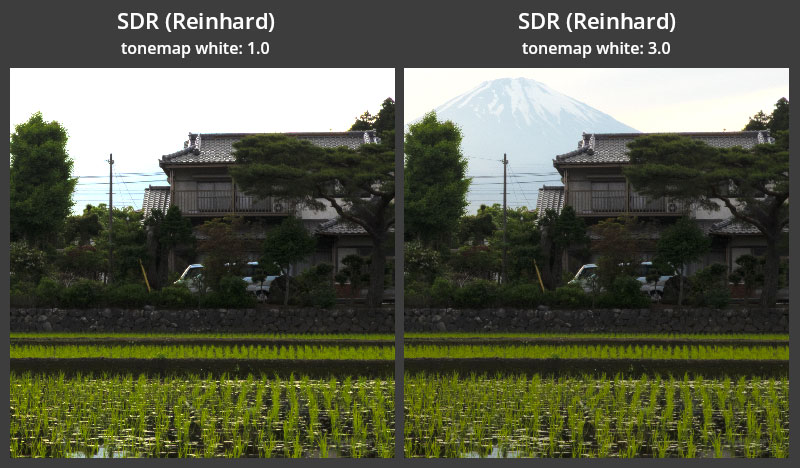

HDR output
HDR output is a feature that enables presentation of High Dynamic Range (HDR) visuals on HDR-capable screens. HDR output is not to be confused with the internal HDR rendering that is used by Godot for both Standard Dynamic Range (SDR) output and HDR output modes.
HDR output is supported on iOS, Linux (Wayland), macOS, visionOS, and Windows. It is not supported on Android, Linux (X11), or web.
Note
Both Windows 10 and 11 support HDR output, but only Windows 11 provides an app that can be used to configure the screen’s maximum luminance that is used by the Godot editor.
On Linux, GNOME versions prior to 50 have a bug that prevents HDR output from working on Wayland. If you are using an older version of GNOME, you will need to upgrade to version 50 or later to use HDR output on Wayland.
Enabling HDR output in your project
You can enable HDR output in any new or existing project using these steps:
Ensure no Environment resources use SDR-only features:
Tonemap Mode: Filmic or ACES
Glow Blend Mode: Soft Light
Adjustments: Color Correction
Configure the Renderer project setting to
mobileorforward_plus.Configure the Rendering Device Driver advanced project setting to
metalfor iOS andd3d12for Windows.Configure the Display Server Driver.linuxbsd advanced project setting to
waylandand enable the Prefer Wayland editor setting.Turn on the HDR 2D project setting and enable use_hdr_2d for all SubViewports and Windows that should support HDR output.
Turn on the Request HDR Output project setting and enable hdr_output_requested for all other Windows that should support HDR output.
[Optional] Provide in-game HDR settings by copying the example from the HDR output demo project to your project.
Note
Some of these settings may already be configured correctly for HDR output in your project. For
example, the Windows Rendering Device Driver is set to d3d12 in projects created in Godot
4.6 onwards, but will need to be changed if the project was created with an older version of
Godot.
Using HDR output in Godot
Try out the HDR output demo project as a first step to using HDR output in Godot. This demo contains examples of the concepts described on this page and will help you ensure that your development environment is correctly configured for HDR output.
HDR output in the Godot editor
The Godot editor will use HDR output for its main window when the Request HDR Output project setting has been enabled. You can tell if your game is running in SDR or HDR output mode based on the text on the right side of game view toolbar: Your game is running in HDR mode when the text "HDR" appears next to the window size.

The number in parentheses next to the "HDR" text is the current output max linear value which is described in the following sections. You can toggle the game's Window.hdr_output_requested property in the game window options menu:

HDR output fundamentals
Godot uses the Extended Dynamic Range (EDR)
paradigm for HDR output. While SDR
output allows color component values between 0.0 and 1.0 to be displayed, HDR output
allows values higher than 1.0. The maximum value that can be displayed is provided by
Window.get_output_max_linear_value() and
this method is valid when using SDR or HDR.

Note
These graphs are presented as SDR images that do not contain any HDR color. To compensate for this limitation, the grayscale bars along each axis have a glow effect applied to represent values that are outside of the SDR range. The "output max value" in this graph represents the maximum linear color component value returned by Window.get_output_max_linear_value().
Designing for HDR output
There are two primary approaches to make the most of HDR output: using the output max linear value and using tonemapping.
While both approaches can be used in the same project, tonemapping should be used to produce HDR output from a Viewport that uses lighting that exceeds the capabilities of an SDR screen, indirect lighting, global illumination, emissive materials, post-processing effects, or any other techniques that make use of the colors values in the scene.
The output max linear value should only be used to present colors directly to the screen without tonemapping and without influencing lighting, post-processing effects, or surrounding color. This makes the output max linear value well suited for CanvasItems or unshaded materials in a scene that has no lighting or basic lighting that otherwise does not exceed the capabilities of an SDR screen.
The Viewport.own_world_3d property can be used to separate which Viewports are affected by tonemapping and other WorldEnvironment effects.
Using output max linear value
In a traditional SDR-only game, the brightest presentation of a color is limited by either the
red, green, or blue component of the color reaching a maximum of 1.0. When using a modern HDR
screen this limitation no longer applies and color components above 1.0 can be accurately
presented. Godot provides the maximum color component value that can be presented by the screen
through the output max linear value. This
value can be used in both SDR and HDR, which makes it easy to build your game for both output
modes without needing to change behavior based on whether or not HDR output is enabled.
The output max linear value may change
often as the player adjusts their device brightness, enables or disables HDR output on their
device, or moves the game window between screens, so it's important to retrieve this value every
frame or use the output max linear value changed
signal. The value will always equal 1.0 in SDR mode and may also equal 1.0 when HDR output
is enabled and the player has adjusted their screen to its maximum brightness.
It is best to use this output max linear value
with "highlights" and special effects that
are either brief or involve a small portion of the screen; if the majority of the screen is
presented at this maximum brightness for more than a short time, it will cause the game to appear
uncomfortably bright, as if the game is ignoring the device brightness setting. You may also find
that some effects look best when limited to a maximum linear value that is greater than 1.0,
but less than the output max linear value.
You can read more about how it is sometimes desirable to limit the maximum HDR value in the
HDR and User Interfaces
post of the Android Developers Blog.
Transforming a color to be the brightest the screen can present can be done with a script. When working with CanvasItem, it may be convenient to apply the resulting modified color to the modulate or self_modulate property with the base color of the CanvasItem set to white. The following script demonstrates this:
extends CanvasItem
# Set this to your desired color when the CanvasItem's base color is white.
@export var sdr_self_modulate: Color = Color.WHITE
# Set this to -1.0 to disable limiting the maximum color value.
@export_range(0, 20, 0.1, "or_less", "or_greater") var max_linear_value_limit: float = -1.0
func _enter_tree() -> void:
var window: Window = get_window()
window.output_max_linear_value_changed.connect(_on_output_max_linear_value_changed)
_on_output_max_linear_value_changed(window.get_output_max_linear_value())
func _exit_tree() -> void:
get_window().output_max_linear_value_changed.disconnect(_on_output_max_linear_value_changed)
func _on_output_max_linear_value_changed(output_max_linear_value: float) -> void:
# Adjust the brightness of color to be the brightest possible, regardless
# of SDR or HDR output, but no brighter than max_linear_value_limit.
if max_linear_value_limit >= 0.0:
output_max_linear_value = minf(output_max_linear_value, max_linear_value_limit)
self_modulate = normalize_color(sdr_self_modulate, output_max_linear_value)
func normalize_color(srgb_color, output_max_linear_value = 1.0):
# Color must be linear-encoded to use math operations.
var linear_color = srgb_color.srgb_to_linear()
var max_rgb_value = maxf(linear_color.r, maxf(linear_color.g, linear_color.b))
var brightness_scale = output_max_linear_value / max_rgb_value
linear_color *= brightness_scale
# Undo changes to the alpha channel, which should not be modified.
linear_color.a = srgb_color.a
# Convert back to nonlinear sRGB encoding, which is required for Color in
# Godot unless stated otherwise.
return linear_color.linear_to_srgb()
The HDR output demo project includes more advanced versions of this script and examples of how this approach can be used in your project.
Using Tonemapping
To produce HDR output without using the output max linear value your scenes will need color values that exceed what an SDR screen can present, so it is important to use a tonemapper like Reinhard or AgX to handle display of these bright scene values on both SDR and HDR screens.
Tonemapping and HDR
The primary role of a tonemapper is to reduce the dynamic range of a natural scene with a very
high dynamic range of brightness to a smaller dynamic range that can be presented on a screen.
Tonemappers in Godot use the output max linear value
to determine the output range that the screen is capable of presenting. For example, with the
Reinhard tonemapper in Godot, linear
scene values in the range of 0.0 to tonemap white
are mapped to an output range of 0.0 to
output max linear value.

With this approach, you can adjust tonemap white to be sure that any linear scene value below tonemap white will be shown without clipping. This ensures that details are not lost when presenting the image on a screen with a lower dynamic range than the original scene.

While this behavior is perfectly stable in SDR, where the output max linear value
is fixed at 1.0, this behavior is dynamic with HDR based on the capabilities of the screen:

As shown in the graphs above, the Reinhard tonemapper will behave the same as the Linear tonemapper when output max linear value is equal to or higher than tonemap white. This allows for accurate color reproduction on HDR screens that are capable of reproducing the original brighter scene values. When output max linear value has increased to be higher than tonemap white, tonemap white will be adjusted to match this output max linear value.
The AgX tonemapper behaves similar to Reinhard in this way, but its tonemap white is always multiplied by output max linear value. The Linear tonemapper applies no tonemapping at all; its tonemap white equals output max linear value in all scenarios. The Filmic and ACES tonemappers ignore output max linear value entirely and always produce an image in the SDR range.
Why not mix output max linear value with other techniques?
Tonemapping, indirect lighting, global illumination, and post-processing effects all depend on stable scene color values to produce consistent and predictable results in both SDR and HDR modes. If a developer uses these types of techniques with a scene that has color values that change based on output max linear value, the results will no longer be similar for screens with different capabilities.
For example, the strength of the glow effect is directly influenced by the brightness of the scene. If the scene brightness changes based on output max linear value, then the glow strength will change as well: a larger output max linear value will produce a stronger glow effect, which is generally an undesirable behavior.
Absolute luminance values
When using HDR output, output max linear value is calculated based on the reference white luminance and the maximum luminance of the screen.
Reference white luminance
The reference white luminance, or reference luminance for short, represents the brightest possible SDR white value. When a user changes the brightness setting of the device that is producing the video signal, such as a desktop computer, laptop, or smartphone, they are simply adjusting their reference luminance. On a smartphone this change may happen automatically via the smartphone's automatic screen brightness feature and also happens when the user manually adjusts their screen brightness. On desktop or laptop computers, there are different ways to adjust this reference luminance depending on the operating system.
This value is typically around 100 to 300 nits and is always represented by an
output max linear value of exactly 1.0.
This value may also be referred to as "paper white" or the "SDR white level".
Note
When using an external screen on Windows, the SDR content brightness HDR display setting directly controls the reference luminance value and is the primary way to adjust the brightness of the Windows desktop and Godot. When using a built-in HDR screen on Windows, changing HDR content brightness also directly controls the reference luminance, but has no effect on the brightness of the Windows desktop or Godot because a separate brightness implementation negates any effect of changes to the reference luminance.
Maximum luminance
The maximum luminance is a property of an HDR screen. This value may be anywhere from 250 to 2,000 nits or beyond. It is common for external screens to report a maximum luminance value that is higher than the physical capabilities of the screen that results in visible tonemapping applied by the screen. Some desktop or laptop operating systems provide a way to calibrate the maximum luminance value that is used for each external screen.
Note
When using a built-in screen on Windows, the reported maximum luminance will change as the user adjusts their laptop screen brightness while the reported reference luminance remains constant. This behavior is opposite from using an external display on Windows and adjusting the SDR content brightness HDR display setting and also opposite of other platforms.
Output max linear value in practice
When in HDR mode, the output max linear value
will increase as the user decreases their
reference luminance because more HDR headroom becomes available. Similarly, as the user increases
their reference luminance, they will have less HDR headroom available and
output max linear value will decrease. In some cases when using
HDR mode with the highest reference luminance,
output max linear value will equal 1.0, matching SDR behavior,
because no HDR headroom is available.
Not all screens are equal
SDR standards were designed to match the capabilities of existing screens that were commonly used around the world. HDR standards have been intentionally written with the opposite approach: they are designed to utilize the capabilities of an ideal screen that is not yet widely available.
In practice, this means that common HDR screens may perform their own internal tonemapping, gamut mapping, or dynamic tonemapping (DTM) to support content that extends to a wider gamut and luminance range than what the physical hardware can achieve. Some screens are not capable of presenting very bright color values that fill more than a small (1% to 10%) portion of the screen and will dim the entire image or part of the image temporarily when this happens. These features may produce colors that are not representative of other screens so it's best to disable them, if possible, when developing your HDR game. You may be able to disable some or all of these features by enabling the HGiG mode on your screen or setting the screen's mode to "clip" and/or "stable". Some HDR screens may present dark or saturated colors differently than others; this difference in appearance is often the result of the screen technologies.